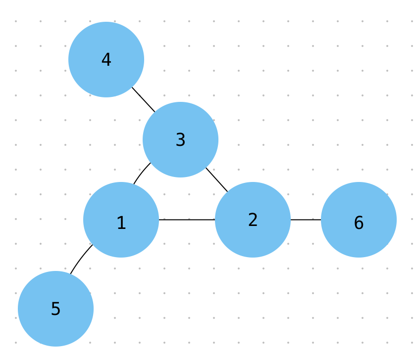

Consider the following "magic" 3-gon ring, filled with the numbers 1 to 6 and each line adding to
nine.

Working clockwise, and starting from the group of three with the numerically lowest external node (4,3,2
in
this example), each solution can be described uniquely. For example, the above solution can be described by
the set: 4,3,2; 6,2,1; 5,1,3.
It is possible to complete the ring with four different totals: 9, 10, 11, and 12. There are eight
solutions
in total.
Total 9 - Solution Set 4,2,3; 5,3,1; 6,1,2; 4,3,2; 6,2,1; 5,1,3
Total 10 - Solution Set 2,3,5; 4,5,1; 6,1,3; 2,5,3; 6,3,1; 4,1,5
Total 11 - Solution Set 1,4,6; 3,6,2; 5,2,4; 1,6,4; 5,4,2; 3,2,6
Total 12 - Solution Set 1,5,6; 2,6,4; 3,4,5; 1,6,5; 3,5,4; 2,4,6
By concatenating each group, it is possible to form 9-digit strings; the maximum string for a 3-gon ring is
432621513.
Using the numbers 1 to 10, and depending on arrangements, it is possible to form 16- and 17-digit strings.
What is the maximum 16-digit string for a "magic" 5-gon ring? Select Show Solution to show the
solution. Select Hide Solution to hide the solution.